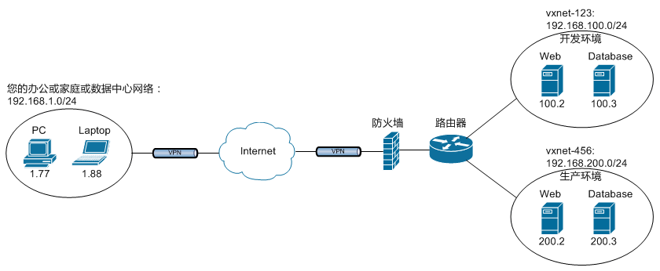
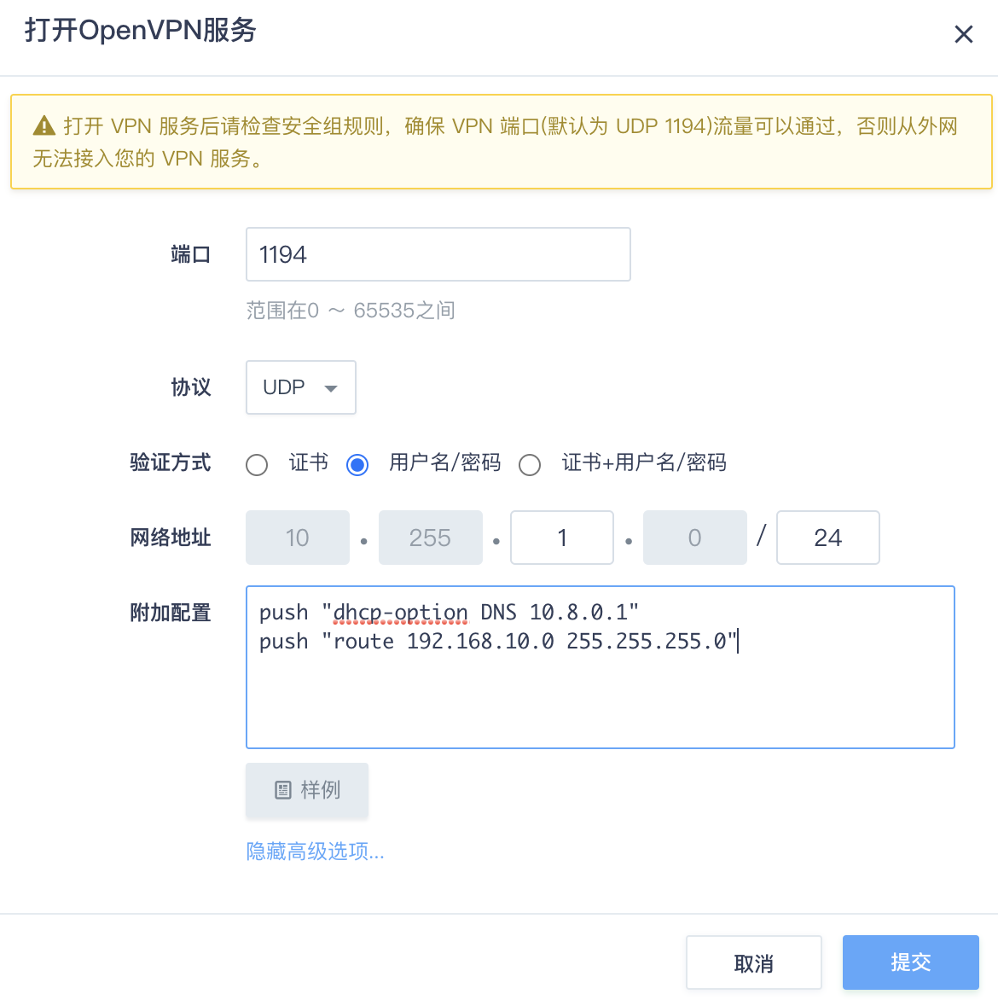
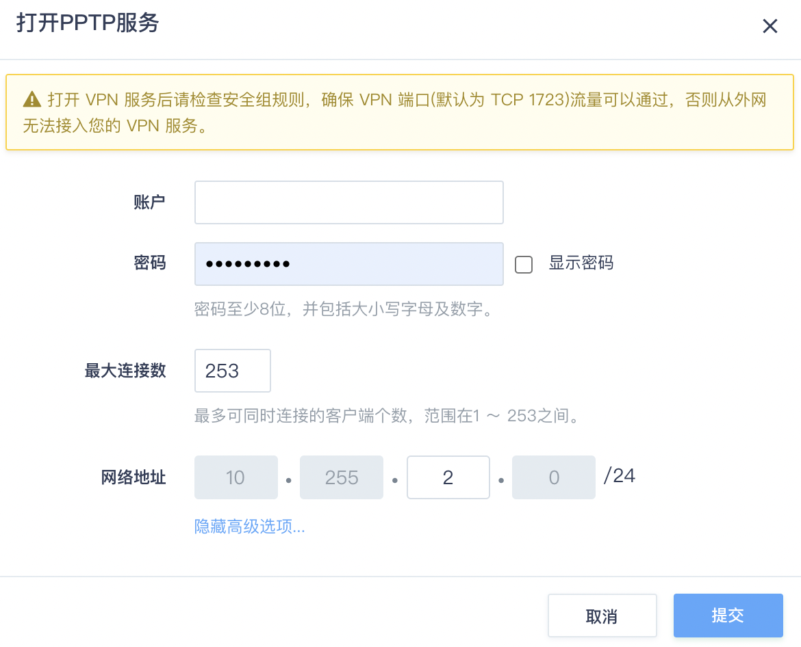
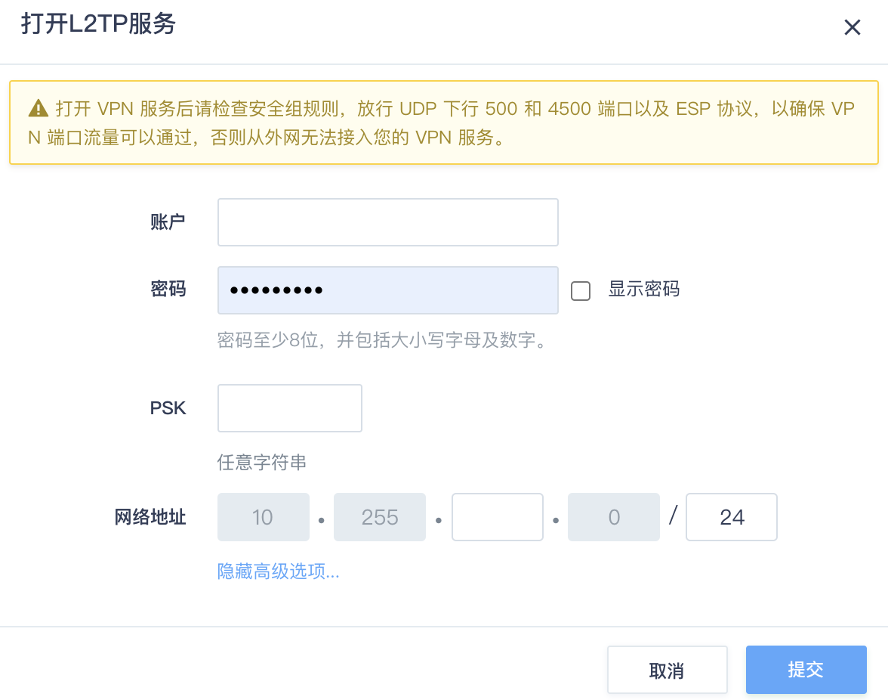

VPN 服务
VPN 服务支持 OpenVPN / PPTP / L2TP-IPsec 协议。
操作场景
本篇指南旨在介绍如何远程拨入您在云平台上的私有网络。如果您希望将您自己的数据中心或办公、家庭网络与您的云上私有网络连接在一起，建议您使用 GRE 隧道形成公私兼顾的混合云（hybrid cloud）。
假设您当前位于办公网络，本地网络地址是 192.168.1.0/24 ，下面我们的任务是将云上的两个私有网络网络与您的本地网络连接。
说明：
因为涉及到网络间互联，所以各个网络必须使用不同的网络地址， 否则地址就冲突了。如果存在地址冲突，您可以将私有网络与 VPC 网络断开、再重新连接至 VPC 网络， 在对话框中重新指定一个网络地址给私有网络。

OpenVPN 服务
启动 OpenVPN 服务
-
登录管理控制台，选择产品与服务 > 网络服务 > VPC 网络，进入 VPC 列表页面。
-
找到您的 VPC 网络，点击 VPC 网络名称，进入详情页。
-
切换至管理配置页签，然后在左侧点击 VPN 服务。
-
点击 Open VPN 后面的打开，弹出打开 OpenVPN 服务对话框。
-
配置 OpenVPN 参数，点击提交。
多数情况下，直接使用缺省配置即可，但建议您点开高级选项检查一下各项配置，尤其是 VPN 网络地址不能跟您的本地网络存在冲突。
OpenVPN 提供了多种验证方式，除默认的证书验证方式，还提供用户名/密码和 证书+用户名/密码验证方式。 若使用包含 “用户名/密码” 的验证方式，还需要添加对应的可授权账户列表。
-
点击页面上方的应用修改， 更新路由器的配置。
-
前往 VPC 网络使用防安全组规则中打开 OpenVPN 服务器的运行端口，如本例中，需要打开 UDP 下行 1194 端口。完成后点击应用更改。
配置 OpenVPN 客户端
启用 OpenVPN 隧道服务后，将出现下载证书的按钮， 点击该按钮，即可得到文件名类似 rtr-xxxxxxxx-certs.zip 的 zip 包， 里面有配置 OpenVPN 客户端的必备证书，密钥文件和客户端配置文件样例：
- rtr-xxxxxxxx.crt: SSL 客户端证书
- rtr-xxxxxxxx.key: SSL 客户端私钥
- rtr-xxxxxxxx.takey: OpenVPN TLS Auth 密钥
- yunify-ca.crt: CA 根证书
说明：
以上四个文件是必需的配置文件，此外我们还在 zip 包中准备了不同操作系统下的配置文件样例，可作为参考。
Windows
-
下载 OpenVPN Windows 安装包，并安装它。缺省情况下，OpenVPN 将被安装到
C:\Program Files\OpenVPN目录中。（按照默认选项安装即可。如非必要，请勿自主勾选选项） 推荐使用OpenVPN官方客户端2.3.6和以上版本. 下载地址在： https://openvpn.net/get-open-vpn/ 安装程序包括服务器和客户端。安装时选择”OpenVPN GUI”模块即可安装客户端。 -
将前面 zip 包中的配置文件放入
C:\Program Files\OpenVPN\config目录中。 -
将以下内容保存到
C:\Program Files\OpenVPN\config目录中，文件名任意， 扩展名为 .ovpn ，比如可以叫做rtr-xxxxxxxx.ovpnclient dev tun proto <udp> remote <your-router-eip> 1194 resolv-retry infinite nobind persist-key persist-tun ca yunify-ca.crt cert <rtr-xxxxxxxx.crt> key <rtr-xxxxxxxx.key> tls-auth <rtr-xxxxxxxx.takey> 1 cipher AES-256-CBC comp-lzo mssfix 1400说明：
请将以上文件中的
<xxx>部分替换成您的配置。如:remote <your-router-eip> 1194替换为remote 117.121.XXX.XXX 1194。可参考 zip 包里带的 windows sample 配置样例。至此，您可以连接 VPN 了。
Linux
以 Ubuntu Linux 为例子来描述，其他的 Linux 分发版都是类似的做法。
-
安装 OpenVPN。
$ sudo apt-get install openvpn -
将前面 zip 包中的配置文件放入
/etc/openvpn目录中。 -
将以下配置保存到
/etc/openvpn目录中，文件名任意，扩展名为.conf， 比如可以叫做rtr-xxxxxxxx.confclient dev tun proto <udp> remote <your-router-eip> 1194 resolv-retry infinite nobind user <nobody> group <nogroup> persist-key persist-tun ca yunify-ca.crt cert <rtr-xxxxxxxx.crt> key <rtr-xxxxxxxx.key> tls-auth <rtr-xxxxxxxx.takey> 1 cipher AES-256-CBC comp-lzo mssfix 1400说明：
-
请将以上文件中的
<xxx>部分替换成您的配置。如:remote <your-router-eip> 1194替换为remote 117.121.XXX.XXX 1194。可参考 zip 包里带的 windows sample 配置样例。 -
user / group 请分别查询您本地 Linux 系统的
/etc/password和/etc/group文件。
-
-
连接 VPN。
$ sudo service openvpn start
Mac
-
客户端以 Tunnelblick 为例， 先下载安装 Tunnelblick 。
-
将前面 zip 包中的配置文件解压到同一目录中，其中 .ovpn 是 VPN 配置文件， 可根据需要做调整，样例如下
client dev tun proto <udp> remote <your-router-eip> 1194 resolv-retry infinite nobind user nobody group nogroup persist-key persist-tun ca yunify-ca.crt cert <rtr-xxxxxxxx.crt> key <rtr-xxxxxxxx.key> tls-auth <rtr-xxxxxxxx.takey.key> 1 cipher AES-256-CBC comp-lzo mssfix 1400说明：
-
user / group 可查询您本地系统的
/etc/passwd和/etc/group文件。 -
请将以上文件中的
<xxx>部分替换成您的配置。如:remote <your-router-eip> 1194替换为remote 117.121.XXX.XXX 1194。
-
-
在 Tunnelblick 面板中添加配置，或双击 .ovpn 文件便可将配置添加到 Tunnelblick，然后就可以连接了。
用户名/密码验证
如果您的 OpenVPN 开启了 “用户名/密码” 登录方式，你需要在连接的时候提供用户名和密码输入，如果希望通过配置文件来解决， 您可以修改客户端的配置文件中的 “auth-user-pass password.txt” ，通过一个独立的文件，例如 “password.txt” 来保持用户名/密码信息。
说明：
如果是 Mac 系统，不需要 password.txt 文件，配置中 auth-user-pass 后面也不需要写文件名，只保留 “auth-user-pass” ，会在连接 VPN 时提示输入账号密码，并支持保存到 Mac 系统的 Keychain 中。
样例如下：
client
dev tun
proto <udp>
remote <your-router-eip> 1194
resolv-retry infinite
nobind
user nobody
group nogroup
persist-key
persist-tun
ca yunify-ca.crt
cert <rtr-xxxxxxxx.crt>
key <rtr-xxxxxxxx.key>
tls-auth <rtr-xxxxxxxx.takey.key> 1
auth-user-pass password.txt
cipher AES-256-CBC
comp-lzo
mssfix 1400
password.txt 文件样例如下，用户名和密码分为两行存放。
<user_name>
<password>
PPTP 服务
启动 PPTP 服务
-
登录管理控制台，选择产品与服务 > 网络服务 > VPC 网络，进入 VPC 列表页面。
-
找到您的 VPC 网络，点击 VPC 网络名称，进入详情页。
-
切换至管理配置页签，然后在左侧点击 VPN 服务。
-
点击 PPTP 后面的打开，弹出打开 PPTP 服务对话框。
-
配置 VPN 用户名和密码，点开高级选项检查一下各项配置，注意 VPN 网络地址不能跟您的本地网络存在冲突。
 -
点击提交，然后点击页面上方的应用修改， 以更新配置。
-
前往安全 > 安全组，在 VPC 网络使用的安全组规则中，设置允许 PPTP 服务器运行端口通过， 即 TCP 下行 1723 端口; 同时还需要允许 GRE 协议。设置完成后，点击应用更改 。
配置 PPTP 客户端
Windows XP
-
初次连接的用户，可以先通过以下步骤创建新的网络连接：
-
单击开始，选择控制面板，单击网络和Internet连接。
-
选择创建一个到您的工作位置的网络连接。
-
选择虚拟专用网络连接，然后单击下一步。
-
输入公司名（自定义即可），然后单击下一步。
-
设置服务器地址为路由器的公网地址，单击下一步。
-
勾选在我的桌面上添加一个到此连接的快捷方式，然后单击 完成。
-
-
若 VPN 网络连接已经创建，只需要在桌面上点击该网络连接，输入 VPN 连接的用户名和密码， 然后点击连接即可。
-
连接 VPN 之后，默认情况下本地默认网关会指向 VPN 服务器，即所有流量都会通过 VPN 服务器。 如果您不需要，可按如下步骤禁用：
-
点击 VPN 连接中的属性，选择网络。
-
选择TCP/IP 并点击属性。
-
在常规项中点击高级，去勾选在远程网络上使用默认网关 ，点击确定。
-
断开并重新连接 VPN。
-
-
禁用之后，你需要手动配置路由规则才能访问私有网络里的云服务器，具体操作如下：
-
点击开始菜单，选择运行，输入
cmd，并点击确定，进入命令行界面。 -
输入命令
ipconfig，查看当前 VPN 的地址（10.255开头），例如是 “10.255.1.2” ，并假设你需要访问的私有网络地址是“192.168.1.0/24”。 -
添加路由规则
route add 192.168.1.0 mask 255.255.255.0 10.255.1.2。 -
测试是否可以正常访问 “192.168.1.0/24” ，例如
ping 192.168.1.1。
-
Windows 7
-
初次连接的用户，可以先通过以下步骤创建新的网络连接：
-
单击开始，选择 控制面板，单 网络和Internet，单击网络和共享中心。
-
选择设置新的连接或网络，选择连接到工作区，单击下一步。
-
选择使用我的 Internet 连接(VPN)。
-
在 Internet 地址 处输入路由器的公网IP，目标名称可以自定义，单击下一步。
-
输入 VPN 连接的用户名和密码，点击连接即可完成。
-
-
若 VPN 网络连接已经创建，只需点击桌面右下角的网络连接处，选择并点击相应的网络连接，在界面上输入 VPN 连接的用户名和密码， 然后点击连接即可。
-
连接 VPN 之后，默认情况下你本地默认网关会指向 VPN 服务器，即所有流量都会通过 VPN 服务器。 如果您不需要，可按如下步骤禁用：
-
右键对应的 VPN 连接，选择属性。
-
选择网络 中的TCP/IPv4，然后点击属性。
-
在常规项中点击高级，将在远程网络上使用默认网关 前面的勾选去掉，点击确定。
-
断开并重新连接 VPN。
-
-
禁用之后，你需要手动配置路由规则才能访问私有网络里的云服务器，具体操作是：
-
点击开始菜单，找到 所有程序 > 附件 > 命令提示符，右键 以管理员身份运行，进入命令行界面。
-
输入命令
ipconfig，查看当前 VPN 的地址（10.255开头），例如是10.255.1.2；并假设你需要访问的私有网络地址是192.168.1.0/24。 -
添加路由规则
route add 192.168.1.0 mask 255.255.255.0 10.255.1.2。 -
测试是否可以正常访问 “192.168.1.0/24 ，例如
ping 192.168.1.1。
-
Linux
以 Ubuntu Linux 为例子来描述，其他的 Linux 分发版都是类似的做法。
-
安装 PPTP 客户端：
$ sudo apt-get install pptp-linux -
修改 /etc/ppp/chap-secrets 文件，配置验证所需的用户名和密码，字符串之间用 “\t” 分隔：
<user_name> pptpd <password> *说明：
请将以上文件中的
<xxx>替换成您的配置。如:<user_name> pptpd <password> *替换为guest pptpd passw0rd *。 -
新建
/etc/ppp/peers/<tunnel>文件，是由你定义的一个隧道名称， 例如我们可以叫做 vpn，即这个文件为 /etc/ppp/peers/vpn：pty "pptp <vpn_server_ip> --nolaunchpppd --nobuffer --loglevel 0" name <user_name> remotename pptpd require-mppe-128 file /etc/ppp/options.pptp ipparam <tunnel>说明： 请将以上文件中的
<xxx>部分替换成您的配置。释义如下：<vpn_server_ip>：路由器的公网IP；<user_name>： VPN 连接的用户名；<tunnel>：您定义的隧道名称，在本例中是vpn。
-
启动 VPN 客户端。
$ pon <tunnel> persist说明：
请将以上命令行中的
<tunnel>替换成你定义的隧道名称，在本例中是 vpn。 -
配置路由规则。
-
如果您希望通过 VPN 来访问路由器内部私有网络里的机器，你还需要手动配置路由规则， 假设你需要访问的私有网络的网络地址为 192.168.10.0/24，相应的路由配置为：
$ ip route add 192.168.10.0/24 dev ppp0说明：
命令中的 ppp0 为客户端连接的设备名，如果你只有一个 VPN 客户端正在运行，那默认设备一般都是 ppp0， 如果不是，你可以通过 ifconfig 命令来进行查看。
-
如果您希望在每次启动客户端之后能自动配置路由规则，则你可以将你需要的指令写成脚本，放置在 /etc/ppp/ip-up.d/ 下面。 例如，可以创建脚本文件 /etc/ppp/ip-up.d/add-route，内容为:
#!/bin/sh ip route add 192.168.10.0/24 dev $1
-
-
关闭 VPN 客户端。如果你想断开 VPN 连接，执行如下命令。
$ poff <tunnel>说明：
请将以上命令行中的
<tunnel>替换成你定义的隧道名称，在本例中是 vpn。
L2TP 服务
说明：
由于苹果的系统 Mac OS 已不再支持 PPTP 隧道服务和客户端等配置项，若您使用的设备系统是 Mac OS，建议您参考本节内容，使用 L2TP 的方式使用 VPN 服务 。
启用 L2TP 服务
-
登录管理控制台，选择产品与服务 > 网络服务 > VPC 网络，进入 VPC 列表页面。
-
找到您的 VPC 网络，点击 VPC 网络名称，进入详情页。
-
切换至管理配置页签，然后在左侧点击 VPN 服务。
-
点击 L2TP 后面的打开，弹出打开 L2TP 服务对话框。
-
配置 VPN 用户名、密码、PSK，点击高级选项检查一下各项配置，注意 VPN 网络地址不能跟您的本地网络存在冲突。
 -
点击提交，然后点击页面上方的应用修改， 以更新配置。
-
前往安全 > 安全组，在 VPC 网络使用的安全组规则中，设置允许 L2TP 服务运行端口通过，完成后，点击应用修改。
说明：
-
如果您使用的是 L2TP-IPsec 连接方式（iPhone 默认名字为 L2TP），请放行 UDP 下行 500 和 4500 端口以及 ESP 协议。
-
如果您使用的是 L2TP 连接方式，请放行 UDP 下行 1701 端口。
-
配置 L2TP 客户端
Linux
以 Ubuntu Linux 为例子来描述，其他的 Linux 分发版都是类似的做法。 安装此客户端分为L2TP、IPsec两个部分。
IPsec部分
-
安装依赖包。
$ sudo apt-get install openswan -
修改
/etc/ipsec.conf配置。version 2.0 config setup protostack=netkey nat_traversal=yes keep_alive=60 virtual_private= oe=off conn %default rekey=yes authby=secret auto=start type=tunnel keyexchange=ike phase2=esp pfs=yes dpddelay=15 dpdtimeout=60 dpdaction=restart conn <l2tp_name> authby=secret type=transport pfs=no auto=start left=%defaultroute leftprotoport=17/1701 right=<l2tp_server_ip> rightprotoport=17/1701说明： 请将以上文件中的
<xxx>连部分替换成您的配置，释义如下:<l2tp_server_ip>：路由器的公网IP；<l2tp_name>：IPsec连接名（请自行命名）。
-
修改
/etc/ipsec.secrets配置。%any <l2tp_server_ip>: PSK "<psk>"说明： 请将以上文件中的
<xxx>部分替换成您的配置，释义如下:<l2tp_server_ip>：路由器的公网IP；<psk>：预共享密钥。
-
重启服务。
$ sudo service ipsec restart说明：
使用命令
ipsec auto status检查连接是否正常建立。
L2TP 部分
-
安装依赖包。
$ sudo apt-get install xl2tpd ppp -
修改
/etc/xl2tpd/xl2tpd.conf配置。[lac <lac_name>] lns = <l2tp_server_ip> refuse chap = yes refuse pap = yes require authentication = yes length bit = yes pppoptfile = /etc/ppp/<l2tp_name>说明： 请将以上文件中的
<xxx>部分替换成您的配置，释义如下:<lac_name>：lac命名（请自行命名）；<l2tp_server_ip>： 路由器的公网IP；<l2tp_name>：ppp配置的文件名（请自行命名）。
-
新建
/etc/ppp/<l2tp_name>配置文件。+chap lock refuse-eap require-chap require-mschap require-mschap-v2 noauth noccp nodefaultroute proxyarp name "<user_name>" password "<password>"说明： 请将以上文件中的
<xxx>部分替换成您的配置。释义如下:-
<user_name>：用户名； -
<password>：密码。
-
-
重启服务。
$ sudo service xl2tpd restart -
建立连接，如果您想使用IPsec加密，请务必先完成IPsec部分的配置。
$ sudo echo "c <lac_name>" > /var/run/xl2tpd/l2tp-control说明： 关闭连接使用:
$ sudo echo “d <lac_name>” > /var/run/xl2tpd/l2tp-control。请将以上命令中的
<lac_name>替换成第二步的<lac_name>的命名。 -
添加路由。
$ sudo ip route add <ip_network> dev <link_name>说明： 请将以上命令中的
<xxx>部分替换成您的配置。释义如下:<ip_network>：路由器下的私有网络地址段;<link_name>：ppp连接的网卡接口名字，通常以ppp开头。
使用限制
| VPN 类型 | OpenVPN | PPTP | L2TP |
|---|---|---|---|
| 单 VPC 可添加的 VPN 账户数量 | 63 | 254 | 254 |